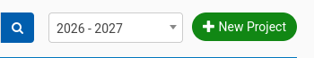
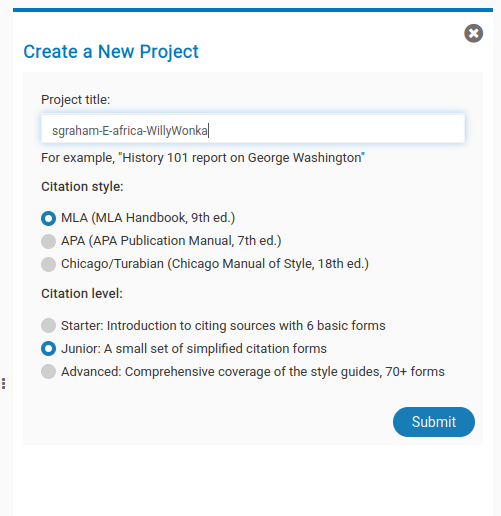
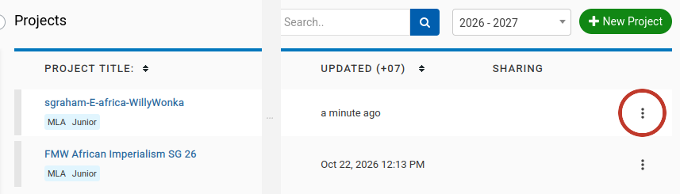
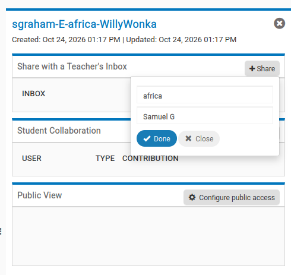
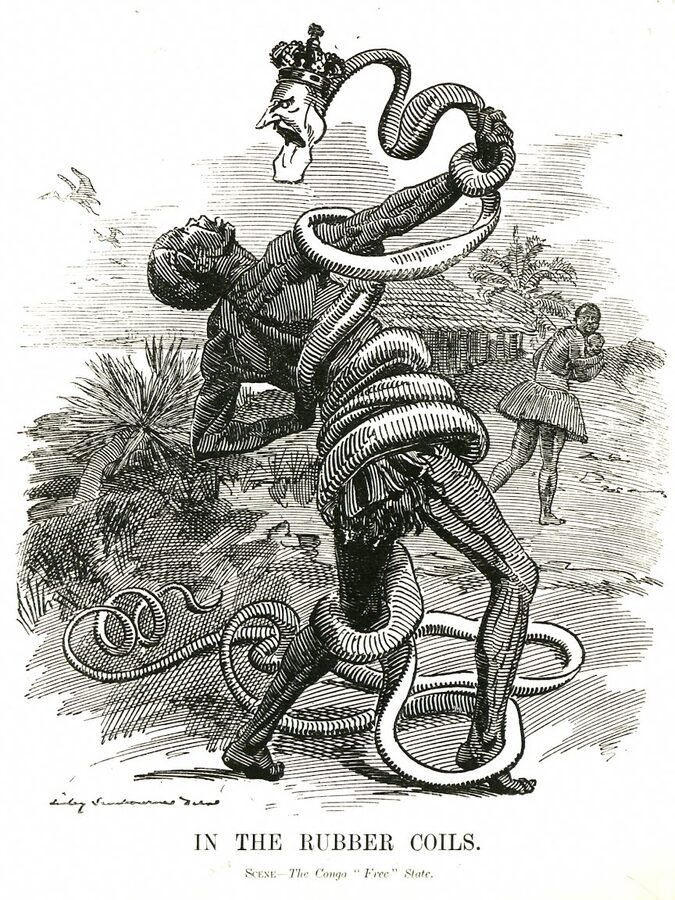
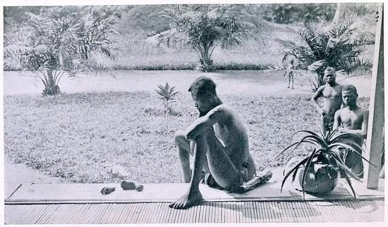
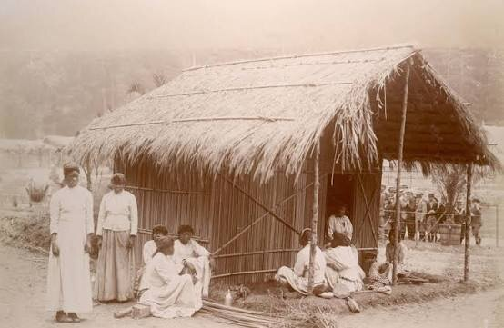

The question
How did 19th century imperialism affect the African nation of your choice?
Be sure to consider African resistance movements in your response.
Due
What you hand in
- A printed poster: your thesis and two analysed images
- A bibliography: your three academic sources and your two images
- Two OPCVLs: one for each image
Exactly how to submit is coming. Your teacher will tell you in class.
Pick one country
South Africa (British) · Ethiopia (Italian) · Namibia (German South West Africa) · Mali (French West Africa)
Step 1 of 6
Set up NoodleTools
Make one project, give it the right name, share it with your teacher.
Your project title
-
Go to www.noodletools.com and sign in with your school Google Account.
-
Click New Project.

-
Paste your project title from the box above. For Citation style choose MLA, and for Citation level choose Junior. Then click Submit.

This is what it looks like if your name was Willy Wonka, in Block E.
-
Back on your project list, click the three dots at the end of your project's row.

-
Under Share with a Teacher's Inbox, click Share and type Africa. Your teacher's inbox should come up. Check the block is yours, pick it, then click Done.

No inbox for your block? Ask your teacher.
You will take your notes in NoodleTools in step 2. Not sure how something works? See the NoodleTools help pages.
Step 2 of 6
Choose a country and research it
Skim a few countries. Choose one. Research more.
Where to research
- SSIS library pageStart here. Use Britannica through this site: it's the school version. Gale in Context (World History) is here too.
- Sources for African ImperialismThe class list of sources.
Take notes in NoodleTools
Colour code or arrange your notes into these (suggested) categories:
Causes · Economic effects · Human rights · Resistance · Today
- Write down questions you have.
- Keep an eye out for artifacts (images) as you go. Save them with who made them and when.
- Keep asking yourself the question.
Step 3 of 6
Check your sources
Are they suitable? Run each of your three sources through these questions.
Step 4 of 6
Find your two images
Two pictures from the time that support your answer.
Image archives
For every image you keep, write down who made it, when, and where it was published. You need this for the Origin in your OPCVL.
Step 5 of 6
Write the thesis
One or two sentences that answer the question. Everything else on your poster backs it up.
Not saved safely. This website can lose it. Copy it into your own doc.
Check it
A starting frame
Use it if you're stuck. Change it once you know what you want to say.
Weak to strong
An example from the Congo, so you can see the moves without copying a thesis for your country.
- Weak
Leopold II was bad for the Congo.
Nobody would disagree, and "bad" is vague. It doesn't say how or why. - Better
The Congo Free State was very violent because Leopold wanted rubber.
Now there's a cause. But "very violent" is still vague, and it doesn't say what changed or why it ended. - Strong
The atrocities in the Congo Free State were mainly caused by Leopold II's personal control and desire for rubber profits, and only ended when international pressure forced him to hand control of the colony to the Belgian government in 1908.
Step 6 of 6
Images, OPCVLs and citations
For each image, do an OPCVL first. Then analyse it in five sentences. Cite your sources throughout.
Stuck? See the worked examples, with weak and strong versions of every sentence.
Last step
Hand it in
Due Thursday 29 October (blocks A to D) or Friday 30 October (blocks E to H).
Exactly how to submit is coming. Your teacher will tell you in class, and this page will be updated.
One way to lay out your poster
This is just one example. Your poster can be portrait or landscape, and you can arrange it your own way, as long as everything below is on it.
The exemplar shows a real version of this.
Examples
All from the Congo Free State, which isn't one of your four choices. Use them for the moves, not the content.
1. The exemplar: "In the Rubber Coils"

OPCVL
- Origin
- A cartoon by Linley Sambourne, Punch’s chief cartoonist, published on 28 November 1906 in Punch, a London humour and politics magazine.
- Purpose
- To criticise Leopold and add to the pressure for reform while the Casement report was being debated. It was aimed at educated British readers, including politicians.
- Content
- A snake with Leopold’s crowned head strangles a Congolese man while others flee, one carrying a child. The title links the snake to the rubber trade.
- Value
- It shows how the British press saw the Congo in 1906: as a scandal caused by one cruel king. Its place in a popular magazine is evidence of international pressure on Leopold.
- Limitation
- It is a British view: Congolese people have no voice and appear only as helpless victims. It blames one man, perhaps intentionally, leaving out the companies and Britain’s own empire.
Analysis
- Context
- This image was published in Britain in Punch in 1906, when Congo was still producing a large amount of rubber (Hochschild) under the personal control of King Leopold II, who had held Congo since 1885 (Britannica).
- Observe
- The snake with Leopold’s head is wrapped around the Congolese man, while other Congolese people flee the scene.
- Symbols
- The snake with Leopold’s head, being wrapped around the Congolese man, represented both the rubber vine and a predator squeezing the life (or in Congo, the wealth and life) out of its victim.
- Perspective
- By putting all blame onto Leopold, it also moves blame away from the colonial system as a whole, including the British colonies. Being published in the UK and drawn by a British cartoonist, it does not represent the voice of Congolese people and shows them as helpless.
- Link
- However, its publication in the UK (not Belgium or Congo) supports the idea that international pressure played a role in the end of Leopold’s control.
On your poster, these would be better blended together, so the ideas connect and flow rather than sitting as five separate sentences.
See it blended together (the exemplar’s own paragraphs)
This image was published in Britain in Punch in 1906, when Congo was still producing a large amount of rubber (Hochschild) under the personal control of King Leopold II, who had held Congo since 1885 (Britannica). The snake with Leopold's head, being wrapped around the Congolese man, represented both the rubber vine and a predator squeezing the life (or in Congo, the wealth and life) out of its victim. The other Congolese people fleeing the scene indicate the inability to fight. The singular snake with Leopold's head suggests that he alone was responsible for the atrocities in Congo.
The cartoon was published with the motivation to expose the abuses in the Congo, and to criticize Leopold in particular. By putting all blame onto Leopold, it also moves blame away from the colonial system as a whole, including the British colonies. Being published in the UK and drawn by a British cartoonist, it does not represent the voice of Congolese people and shows them as helpless. However, its publication in the UK, not Belgium or Congo, supports the idea that international pressure played a role in the end of Leopold's control.
2. A second image: Nsala, 1904
Content warning: this photograph shows a child's severed hand and foot. You can read the analysis without looking.

OPCVL
- Origin
- Taken in 1904 by Alice Seeley Harris, a British Baptist missionary's wife, at the Baringa mission in the Congo Free State.
- Purpose
- To document atrocities as proof for a British and American audience and to build support for reform.
- Content
- Nsala looking at his daughter's severed hand and foot, with other men nearby.
- Value
- Firsthand evidence, made in the Congo at the time. It is hard to dismiss as rumor.
- Limitation
- A European photographed it for foreign viewers, so Nsala's own voice is missing. It shows one case and cannot show the scale of the violence.
Analysis
This 1904 picture was taken by Alice Seeley Harris, a missionary, who posed the photo after meeting the man in the image, Nsala, following the murder of his entire family the previous day. They had been murdered because their village had failed to meet their rubber quota (Hochschild).
The photograph shows the severed hand and foot of Nsala's daughter, with him looking silently, with bent over posture. In the background, other men look on. Showing the aftermath of the violence rather than the violence itself, and showing the quiet inactivity gives a sense of helplessness, horror, loss and sadness. This was likely the intention of Harris, who, with her husband, used the photo in 'lantern lectures' to show foreign audiences the atrocities and to build support for the reform of Leopold's colonial system (Hochschild; Sliwinski). Although the photo does not show Nsala's account itself, it was posed with his contribution and consent, indicating that while international pressure may have been important, Congolese also played a role by actively sharing their stories with those who could spread the stories abroad.
Notice the last sentence: it uses the image to add something new to the thesis (Congolese people had a role too). That's what "Meeting with Excellence" looks like.
3. A third image: Tervuren, 1897
Here is another example, though remember you only need two.

OPCVL
- Origin
- An 1897 photograph credited to A. Gautier, taken at the colonial exhibition that Leopold II launched at Tervuren in Belgium.
- Purpose
- The exhibition was designed to win investors and public support for the Congo project. The photograph records it.
- Content
- Fenced, staged "villages" by the ponds in the park. 267 Congolese were taken to Belgium by force and seven died during the exhibition. More than a million people visited.
- Value
- Shows how Leopold sold the Congo to the Belgian public, in Belgium, at the time.
- Limitation
- We don't know the names of the people in it or what they thought. A staged scene, so it tells us about the exhibition, not about life in the Congo.
Analysis
- Context
- In 1897, while Leopold still personally owned the Congo, he staged a colonial exhibition at Tervuren, near Brussels, to win investors and public support.
- Observe
- Congolese men and women sit and stand outside a thatched hut, while well-dressed European visitors watch from behind a fence on the right.
- Symbols
- The fence turns people into an exhibit, separating "civilised" viewers from the "primitive" people Leopold claimed he was helping.
- Perspective
- The scene was built for a Belgian audience to make the Congo look exotic and worth owning, and it hides the force used to bring the 267 Congolese there, seven of whom died.
- Link
- Leopold needed this kind of publicity because the Congo was his personal project, not Belgium's, which supports my thesis that his personal control drove what happened there.
On your poster, these would be better blended together, so the ideas connect and flow rather than sitting as five separate sentences.
Rubric
What each strand looks like on your poster, from "Meeting" to "Meeting with Excellence".
| Strand | Meeting looks like | Excellence looks like |
|---|---|---|
| Questions and sources | Your sources help answer the question, and you've thought about whose perspective each one shows. | You chose sources on purpose, to get different perspectives, and your OPCVLs explain exactly what each one can and can't tell you. |
| Time, continuity and change | You explain the causes of change in your country, and connect before, during and after colonisation. | You spot patterns across the whole period and come to your own interpretation, not just the textbook's. |
| Using evidence | You gather from a range of sources and check whether each is reliable (step 3). | You judge source quality sharply and say why a source matters for your argument. |
| Communicating conclusions | A precise thesis backed by relevant evidence, and you admit what the evidence can't show or what someone might argue back. | A nuanced argument that pulls evidence from several sources together and fully deals with counterclaims and weak evidence. |
The full rubric, word for word
| Beginning | Developing | Meeting | Meeting with Excellence | |
|---|---|---|---|---|
| Questions and Sources | Can list types of sources but does not understand how they may be helpful in answering questions. | Identifies sources that could be helpful but lacks consideration of perspectives or potential uses. | Chooses sources that are helpful in answering questions considering multiple perspectives and uses. | Strategically determines sources, deeply analyzing their perspectives, types, and potential uses in a nuanced way. |
| Time, Continuity, and Change | Identifies key events in history but struggles to connect them in a meaningful narrative. | Recognizes patterns and themes of historical continuity and change; understands basic cause and effect. | Analyzes in depth the causes of change and continuity over time; makes connections between different historical periods. | Synthesizes a comprehensive understanding of history, recognizing nuanced patterns and developing original interpretations of historical processes. |
| Using Evidence | Gathers information from limited sources with minimal regard to their origins or authority. | Gathers information from a range of sources but inconsistently evaluates their credibility. | Systematically gathers and evaluates information from a wide range of sources effectively. | Critically gathers and evaluates information, demonstrating an exceptional ability to discern source quality and relevance. |
| Communicating Conclusions | Makes simple claims without clear evidence; overlooks counterclaims and evidentiary weaknesses. | Makes claims with some evidence; acknowledges counterclaims and evidentiary weaknesses to some extent. | Constructs arguments with precise claims and relevant evidence; recognizes counterclaims and evidentiary weaknesses. | Constructs nuanced arguments with insightful claims; integrates evidence from multiple sources; thoroughly addresses counterclaims and evidentiary weaknesses. |
Docs & links
The original documents, if you want them.
- Unit slidesThe main slides from this unit.
- ProjectThe task sheet.
- RubricOr read it on the Rubric tab.
- Africa OPCVL templateMake a copy and fill it in for each image. Step 6 has the same prompts.
- OPCVL analysisHow to do an OPCVL.
- Museum Poster Exemplar 2026Also on the Examples tab.
- Exemplar (earlier)Another exemplar.
- Sources for African ImperialismWhere to start researching.
- SSIS library pageBritannica (school version), Gale and image suggestions.
- Early African History slidesAfrica before the Scramble.